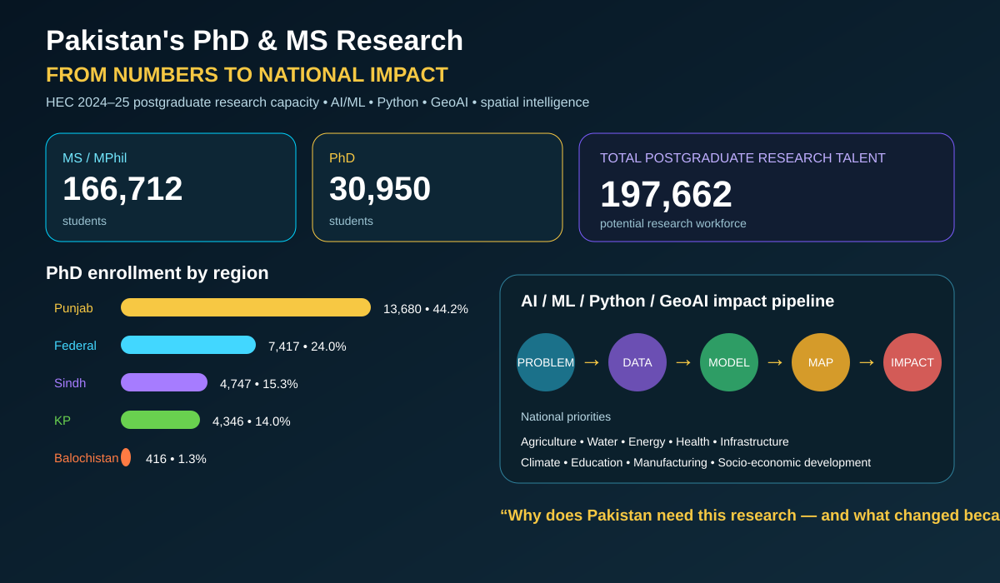

GEOAI · PYTHON · AI/ML · SPATIAL INTELLIGENCE
Pakistan’s PhD & MS Research: From Numbers to National Impact
Interactive-ready research communication concept combining postgraduate enrollment, regional distribution and a problem → data → model → map → impact pipeline.

166,712
MS/MPhil students30,950
PhD students197,662
Total postgraduate research talent5
Regional enrollment groups shownGeoAI concept: connect research topics to spatial evidence, Python analytics, machine-learning models and decision-support maps so research can be evaluated by measurable real-world impact.